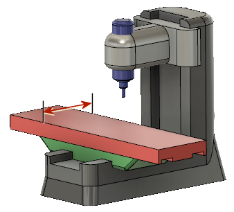

<div id="machine_partY"><p>これは、Y 軸方向でマシンに収まる最大サイズのワークです。<br></p>
<table class="tipTable" cellspacing="10">
<tr>
<td><center></center></td>
</tr><tr>
<td><center><p><b>最大 Y パーツ移動</b></p></center></td>
</tr></table>
</div>